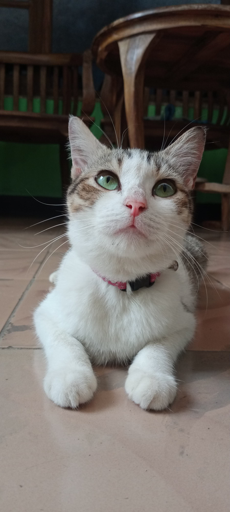
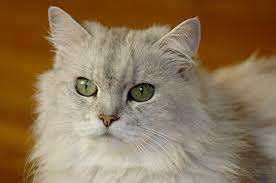
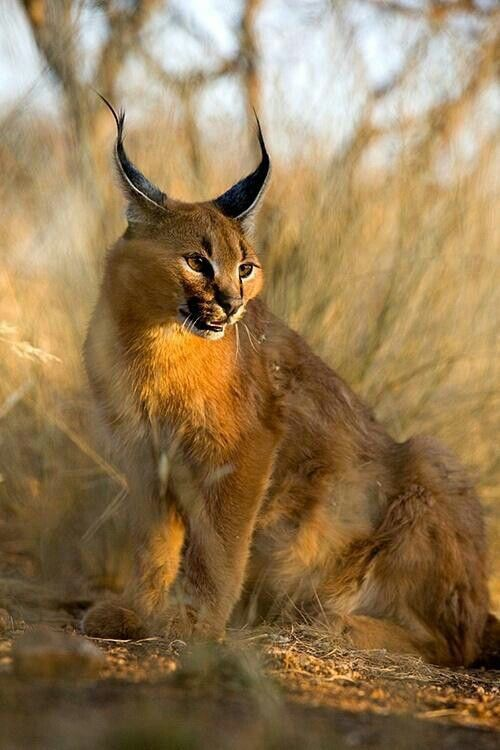
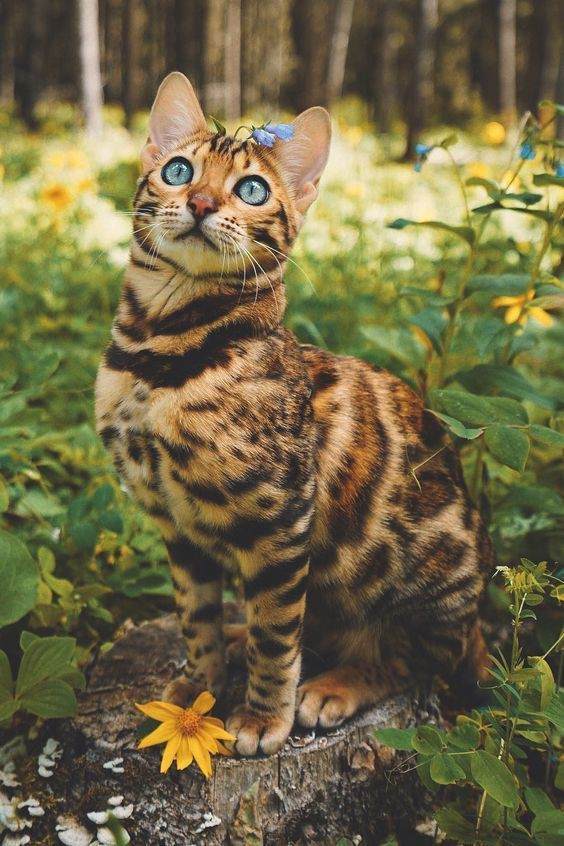
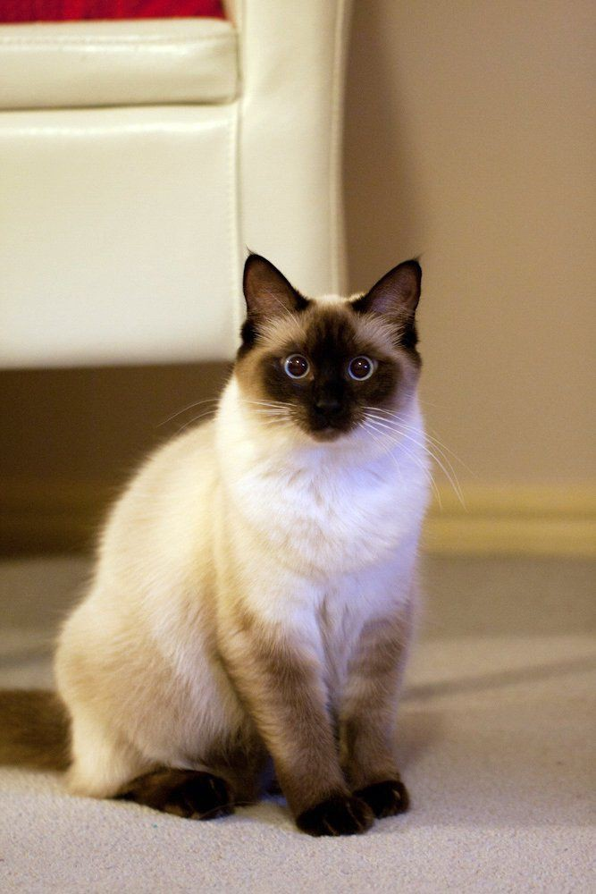
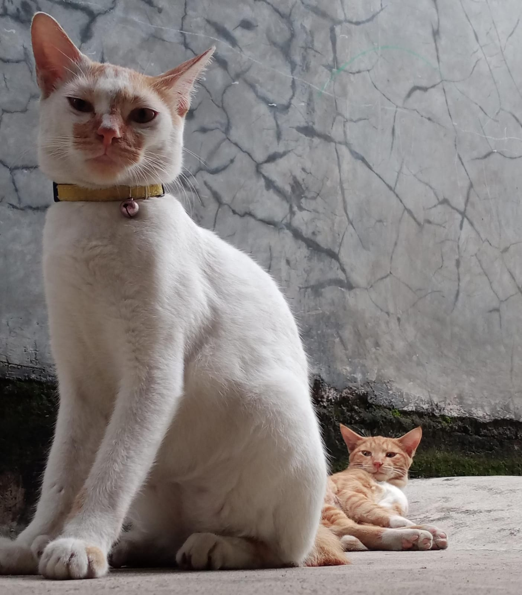

Mengenal Kucing Hewan yang Menggemaskan
Kucing adalah salah satu hewan yang pintar menarik perhatian orang, mulai dari cara jalannya, ekspresi wajahnya sampai dengan pose-pose yang dilakukannya. Tidak hanya terkenal sebagai hewan yang manja, masih banyak fakta tentang kucing yang unik dan menarik lainnya yang membuat kita semakin yakin untuk memeliharanya di rumah.
Kucing adalah mamalia kecil yang sering dijinakkan dan dipelihara oleh manusia sebagai hewan peliharaan atau kucing rumah. Kucing merupakan bagian dari keluarga Felidae dan merupakan salah satu hewan peliharaan yang paling populer di seluruh dunia.
Kucing peliharaan atau kucing rumah adalah salah satu predator terhebat di dunia. Kucing ini dapat membunuh atau memakan beberapa ribu spesies, kucing besar biasanya kurang dari 100. Akan tetapi, karena ukurannya yang kecil, kucing tidak begitu berbahaya bagi manusia. Satu-satunya bahaya yang dapat timbul adalah kemungkinan terjadinya infeksi rabies akibat gigitan kucing dan juga cakaran dari kuku kucing yang sangat tajam dan menyakitkan.
Dalam Islam hewan ini dianggap bersih dan suci karena hewan ini dikenal kebersihan alaminya. Mereka merawat diri mereka sendiri dengan menjilati bulu mereka secara teratur. Sifat ini dilihat sebagai bukti kebersihan dan perhatian terhadap kesehatan diri, dan hal ini memberikan pandangan positif terhadap kucing.
Selain itu dalam sejarah, kucing sering kali ditempatkan di sekitar pemukiman manusia untuk membantu mengendalikan populasi tikus dan hama lainnya. Kemampuan kucing dalam berburu dianggap memberikan manfaat kepada manusia dengan menjaga kebersihan dan kesehatan lingkungan.
10 Jenis Kucing Peliharaan yang Menggemaskan dan Cocok untuk Dijadikan Teman
Kucing merupakan hewan yang menggemaskan sehingga beberapa orang menjadikan kucing sebagai teman dan berikut ada beberapa jenis kucing yang ada di dunia ini
1. Kucing Persia
Kucing Persia adalah salah satu ras yang paling umum dan mudah ditemukan di berbagai bagian dunia. Ada berbagai pilihan warna dan pola yang membuat mereka populer di kalangan pecinta kucing.
Karena sifatnya yang tenang, karakter yang lembut, dan penampilan yang menarik, kucing Persia seringkali menjadi pilihan populer sebagai hewan peliharaan, terutama untuk mereka yang mencari kucing yang cocok untuk hidup di dalam ruangan.
2. Kucing Maine Coon
.jpg)
Kucing Maine Coon adalah salah satu ras kucing terbesar di dunia dan berasal dari Amerika Utara, khususnya dari wilayah negara bagian Maine. Mereka sering kali dianggap sebagai ras kucing asli Amerika.
Maine Coon adalah salah satu ras kucing terpopuler di dunia, terutama di Amerika Serikat. Mereka telah menjadi favorit di kalangan pecinta kucing karena sifat yang menyenangkan dan penampilan yang indah.
Kucing Maine Coon dikenal sebagai kucing yang ramah, cerdas, dan ramah terhadap anak-anak dan hewan peliharaan lainnya. Mereka sering disebut sebagai "kucing anjing" karena sifatnya yang sosial dan kecenderungan untuk mengikuti pemiliknya.
3. Kucing Ragdoll
.jpg)
Kucing Ragdoll adalah ras relatif baru yang berasal dari California, Amerika Serikat. Dikembangkan pada tahun 1960-an oleh seorang penangkar bernama Ann Baker, Ragdoll mendapatkan namanya karena ciri khasnya yang mudah relaks dan "melempar" tubuh mereka saat diangkat.
Ragdoll adalah kucing yang sangat sosial dan menyukai perhatian manusia. Mereka sering mengikuti pemiliknya dari satu ruangan ke ruangan lainnya dan dapat menjadi teman yang setia.
Ragdoll telah menjadi pilihan populer sebagai hewan peliharaan di kalangan pecinta kucing. Sifat mereka yang tenang, kecenderungan untuk bersosialisasi, dan penampilan yang menarik menjadikannya favorit di banyak rumah tangga.
4. Kucing British Short Hair
.jpg)
Kucing British Shorthair (BSH) berasal dari Britania Raya dan memiliki sejarah yang panjang. Mereka awalnya adalah kucing rumahan yang hidup di jalanan, namun, melalui pemuliaan selektif, BSH berkembang menjadi salah satu ras kucing paling ikonik.
BSH memiliki ciri fisik yang cukup menarik seperti bulu pendek yang padat, badan yang kokoh, wajah bulat dengan pipi yang gemuk, serta telinga kecil yang bulat.
BSH adalah salah satu ras kucing yang paling populer di dunia. Sifat mereka yang ramah, penampilan yang menggemaskan, dan kecenderungan untuk beradaptasi dengan baik membuat mereka menjadi pilihan yang populer sebagai hewan peliharaan di berbagai rumah tangga.
5. Kucing Munckin
.jpg)
Kucing Munchkin adalah ras yang unik dan terkenal karena kaki pendeknya. Mereka pertama kali dikenal pada awal 1990-an dan hasil dari mutasi genetik alami. Asal usulnya tidak sepenuhnya jelas, tetapi mereka mendapatkan popularitas karena ciri fisik yang istimewa.
Munckin memiliki ciri fisik yang cukup menarik seperti kaki nya yang lebih pendek dari kaki kucing yang lain, wajah yang bulat dan mata yang besar hingga bentuk ukuran tubuh kecil hingga besar.
Munchkin umumnya dianggap sebagai ras yang sehat. Namun, karena ciri khas kaki pendek mereka, perlu memastikan bahwa mereka tetap sehat dan tidak mengalami masalah tulang atau persendian.
6. Kucing Sphnyx
.jpg)
Kucing Sphynx, yang dikenal dengan kulit tanpa bulu mereka, pertama kali muncul di Kanada pada tahun 1960-an sebagai hasil dari mutasi genetik alami. Mereka merupakan hasil dari pemuliaan selektif untuk mempertahankan ciri tanpa bulu.
Karena tidak memiliki bulu untuk melindungi kulit mereka, Sphynx dapat lebih peka terhadap perubahan suhu. Mereka cenderung suka berjemur di tempat yang hangat dan suka tidur di bawah selimut atau benda-benda yang memberikan kehangatan.
Meskipun penampilan mereka mungkin tampak eksotis, Sphynx adalah pilihan yang populer sebagai hewan peliharaan di kalangan pecinta kucing yang menghargai kepribadian mereka yang ramah, interaktif, dan keunikan fisik mereka yang tanpa bulu.
7. Kucing Caracal
Kucing Caracal (Caracal caracal) bukanlah kucing domestik biasa dan sebenarnya merupakan jenis kucing liar yang ditemukan di Afrika, Timur Tengah, dan beberapa bagian Asia.
Caracal adalah pemburu yang sangat terampil dan mampu melompat tinggi untuk menangkap burung atau mangsa yang berada di dahan. Mereka juga bisa berburu mamalia kecil hingga ukuran sedang.
Caracal tidak seharusnya dijadikan hewan peliharaan karena sifat alaminya yang liar dan ukurannya yang besar. Mereka memerlukan kondisi habitat dan perawatan khusus yang tidak dapat dipenuhi di lingkungan domestik.
8. Kucing Bengal
Kucing Bengal adalah hasil persilangan antara kucing domestik dan kucing leopard Asia (Prionailurus bengalensis). Tujuannya adalah untuk menciptakan kucing yang memiliki penampilan liar dan eksotis tanpa kepribadian liar kucing leopard Asia. Beberapa karakteristik yang dimiliki kucing bengal yaitu pola buku yang unik seperti macan dan brntuk tubuh yang tegap dan atletis.
Kucing Bengal sangat populer di kalangan pecinta kucing yang menghargai keindahan dan keunikan pola bulunya. Namun, karena energi dan kecerdasannya, mereka cocok untuk pemilik yang aktif dan dapat memberikan perhatian dan interaksi yang memadai.
9. Kucing Siam
Kucing Siam berasal dari Thailand (dulu dikenal sebagai Siam), dan telah menjadi salah satu ras kucing tertua yang diakui. Mereka sering kali dikaitkan dengan keluarga kerajaan Thailand dan diyakini memiliki status spiritual.
Kucing Siam adalah kucing yang sangat sosial dan membutuhkan banyak perhatian dari pemiliknya. Mereka sering kali sangat dekat dengan satu orang dan dapat merasa kesepian jika ditinggalkan sendirian untuk waktu yang lama.
Kucing Siam adalah salah satu ras kucing paling populer di dunia. Kepribadian mereka yang cerdas, vokal, dan penuh kasih sayang menjadikan mereka pilihan yang populer di kalangan pecinta kucing.
10. Kucing Domestik
Jenis kucing yang terakhir ini adalah jenis kucing yang sering kita jumpai sehari-hari yaitu kucing domestik atau orang-rang biasa sebut kucing kampung. Kucing domestik atau kucing rumahan adalah kucing yang telah menjalani proses domestikasi oleh manusia dan tinggal di lingkungan rumah tangga.
Kucing kampung juga termasuk jenis kucing yang mudah untuk dipelihara karena tidak memerlukan perawatan khusus layaknya kucing ras lain yang mempunyai karakteristik khas.
Tentang
Halo Semua!
Saya Haniyah Banafsaj Faher biasa diapnggil Haniyah. Saya merupakan salah satu orang penyuka kucing atau orang biasa sebut "cat lover" ada beberapa alasan mengpa saya suka dengan hewan menggemaskan ini yaitu karena hewan ini bisa kita jumpai sehari-hari, tingkah laku nya yang membuat saya gemas, dan juga ketika sedang bermain dengan kucing saya bisa rileks dan membuat mood menjadi lebih baik. Baik itu saja dari saya dan terimakasih.